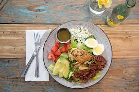

About Me
Hi I am Vinusha Sandadi. I am a full time software developer.
I always love cooking. I recently started this blog where I can share my healthy recipes. All eaters are welcome here.
How did we ever manage to cook before the arrival of the internet?
I suppose we had to rely on cookbooks, cooking tv shows, and knowledge handed down from our grandmothers.
Of course, the more daring would experiment in the kitchen, remembering the successes, and mercifully forgetting any culinary disasters.
Here's my delicious mouth watering cooking recipes for everyday.
For more recipes please click the link.
Importance of Nutrition
A healthy diet throughout life promotes healthy pregnancy outcomes, supports normal growth, development and ageing, helps to maintain a healthy body weight, and reduces the risk of chronic disease leading to overall health and well-being.
What is good nutrition?
Good nutrition means your body gets all the nutrients, vitamins, and minerals it needs to work its best. Plan your meals and snacks to include nutrient-dense foods that are also low in calories.
Most popular recipes
